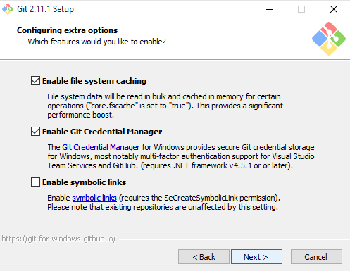
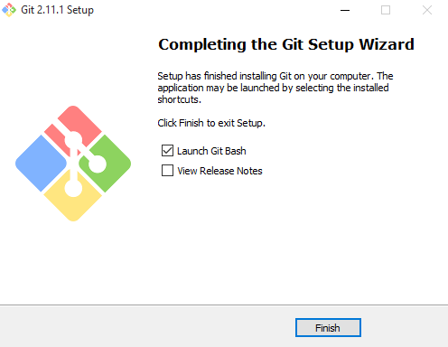

MANUAL DE GIT

Como muchas de las grandes cosas en esta vida, Git comenzó con un poco de destrucción creativa y encendida polémica. El núcleo de Linux es un proyecto de software de código abierto con un alcance bastante grande. Durante la mayor parte del mantenimiento del núcleo de Linux (1991-2002), los cambios en el software se pasaron en forma de parches y archivos. En 2002, el proyecto del núcleo de Linux empezó a usar un DVCS propietario llamado BitKeeper. En 2005, la relación entre la comunidad que desarrollaba el núcleo de Linux y la compañía que desarrollaba BitKeeper se vino abajo, y la herramienta dejó de ser ofrecida gratuitamente. Esto impulsó a la comunidad de desarrollo de Linux (y en particular a Linux Torvalds, el creador de Linux) a desarrollar su propia herramienta basada en algunas de las lecciones que aprendieron durante el uso de BitKeeper. Algunos de los objetivos del nuevo sistema fueron los siguientes:
• Velocidad
• Diseño sencillo
• Fuerte apoyo al desarrollo no lineal (miles de ramas paralelas)
• Completamente distribuido
• Capaz de manejar grandes proyectos (como el núcleo de Linux) de manera eficiente (velocidad y tamaño de los datos)
Desde su nacimiento en 2005, Git ha evolucionado y madurado para ser fácil de usar y aún conservar estas cualidades iniciales. Es tremendamente rápido, muy eficiente con grandes proyectos, y tiene un increíble sistema de ramificación (branching) para desarrollo no lineal.
Github fue desarrollado por Chris Wanstrath, P. J. Hyett, Tom Preston-Werner y Scott Chacon usando Ruby on Rails, y empezó en 2008. Aunque la compañía, Github, Inc. existía desde 2007. El 24 de febrero de 2009, el equipo de GitHub anunció en una charla en las oficinas centrales de Yahoo!, que en su primer año habían logrado acumular 46.000 repositorios públicos, 17.000 de los cuales fueron creados en sólo 1 mes. De los restantes, 6.200 eran forks y 4.600 se habían fusionado. El 5 de julio de 2009, anunciaron la meta de 100.000 usuarios. Y casi un mes más tarde, en otra charla en las oficinas de Yahoo! anunciaron que habían crecido hasta los 90.000 repositorios, llegando a los 135.000 si se contaban los forks.
El 25 de julio de 2010, GitHub anunció que había llegado al millón de repositorios. Llegando a los 2 millones el 20 de abril de 2012.
El 2 de junio de 2011, el portal ReadWriteWeb reportó que GitHub había sobrepasado a SourceForce y Google Code en total de commits.
El 9 de julio de 2012, Peter Levine dijo que los beneficios de GitHub habían crecido un 300% anualmente desde 2008, siendo provechoso durante casi todo el trayecto.
El 16 de enero de 2013, sobrepasaron los 3 millones de usuarios registrados y alojaban ya más de 5 millones de repositorios. Llegando a los 10 millones el 23 de diciembre de 2013.
En junio de 2015, GitHub abrió su primera oficina fuera de Estados Unidos, en Japón.
El 29 de julio de 2015, levantaron una ronda de inversión de 250 millones de dólares, liderada por Sequoia Capital. Esta ronda hizo que la valoración de la compañía ascendiera a los 2 billones de dólares.
En 2016, Forbes Clous 100 listó a GitHub como la número 14.
El 28 de febrero de 2018, GitHub fue víctima del segundo mayor ataque de denegación de servicio (DDoS) de la historia. Llegando a recibir un tráfico de 1.35 terabits por segundo.
El 4 de junio de 2018, Microsoft anunció la compra de la compañía por un importe de 7.500 millones de dólares. Cerrándose la adquisición el 26 de octubre de 2018.
1. Para empezar, entra a la página de Git, darle click al botón de Downloads for Windows.

2. Una vez descargada, dale click al archivo con el formato Git-version.exe. Al inicio preguntará por permisos para ejecutar el instalador, a lo cual debemos responder que sí.
3. Como muchos de los instaladores en Windows, debemos de aceptar las opciones por defecto y darle Next (siguiente) a todo hasta que nos salga el botón de instalar.




4. Una vez terminada la configuración del instalador de Git, comenzará a instalar todos los archivos necesarios en la carpeta indicada al inicio.
5. Al finalizar la instalación, nos dará la opción de abrir Git Bash para finalizar.

6. Y ésta será la terminal que usaremos para ingresar comandos Unix y de Git sobre todo:

CAT (de concatenar), es una maravillosa utilidad que nos permite visualizar el contenido de un archivo de texto sin la necesidad de un editor. Para utilizarlo solo debemos mencionarlo junto al archivo que deseamos visualizar: cat prueba.txt
LS (de listar), permite listar el contenido de un directorio o fichero. La sintaxis es:
$ ls /home/directorio
El comando ls tiene varias opciones que permiten organizar la salida, lo que resulta particularmente útil cuando es muy grande. Por ejemplo, puedes usar -a para mostrar los archivos ocultos y -l para mostrar los usuarios, permisos y la fecha de los archivos. Así como para todos los comandos Linux, estas opciones pueden combinarse, terminando en algo como:
$ ls -la /home/directorio
CD (de change directory o cambiar directorio), es como su nombre lo indica el comando que necesitarás para acceder a una ruta distinta de la que te encuentras. Por ejemplo, si estas en el directorio /home y deseas acceder a /home/ejercicios, seria:
cd /home/ejercicios
Si estás en /home/ejercicios y deseas subir un nivel (es decir ir al directorio /home), ejecutas:
$ cd ..
TOUCH crea un archivo vacío, si el archivo existe actualiza la hora de modificación. Para crear el archivo prueba1.txt en /home, seria:
$ touch /home/prueba1.txt
MKDIR (de make directory o crear directorio), crea un directorio nuevo tomando en cuenta la ubicación actual. Por ejemplo, si estas en /home y deseas crear el directorio ejercicios, sería:
mkdir /home/ejercicios
Mkdir tiene una opción bastante útil que permite crear un árbol de directorios completo que no existe. Para eso usamos la opción -p:
$ mkdir -p /home/ejercicios/prueba/uno/dos/tres
cp (de copy o copiar), copia un archivo o directorio origen a un archivo o directorio destino. Por ejemplo, para copiar el archivo prueba.txt ubicado en /home a un directorio de respaldo, podemos usar:
$ cp /home/prueba.txt /home/respaldo/prueba.txt
En la sintaxis siempre se especifica primero el origen y luego el destino. Si indicamos un nombre de destino diferente, cp copiará el archivo o directorio con el nuevo nombre.
El comando también cuenta con la opción -r que copia no sólo el directorio especificado sino todos sus directorios internos de forma recursiva. Suponiendo que deseamos hacer una copia del directorio /home/ejercicios que a su vez tiene las carpetas ejercicio1 y ejercicio2 en su interior, en lugar de ejecutar un comando para cada carpeta, ejecutamos
Mv (de move o mover), mueve un archivo a una ruta específica, y a diferencia de cp, lo elimina del origen finalizada la operación. Por ejemplo: $ mv /home/prueba.txt /home/respaldos/prueba2.txt Al igual que cp, en la sintaxis se especifica primero el origen y luego el destino. Si indicamos un nombre de destino diferente, mv moverá el archivo o directorio con el nuevo nombre.
RM (de remove o remover), es el comando necesario para borrar un archivo o directorio. Para borrar el archivo prueba.txt ubicado en /home, ejecutamos: $ rm /home/prueba.txt Este comando también presenta varias opciones. La opción -r borra todos los archivos y directorios de forma recursiva. Por otra parte, -f borra todo sin pedir confirmación. Estas opciones pueden combinarse causando un borrado recursivo y sin confirmación del directorio que se especifique. Para realizar esto en el directorio respaldos ubicado en el /home, usamos:$ rm -fr /home/respaldos
PWD (de print working directory o imprimir directorio de trabajo), es un conveniente comando que imprime nuestra ruta o ubicación al momento de ejecutarlo, así evitamos perdernos si estamos trabajando con múltiples directorios y carpetas. Su sintaxis seria: $ pwd
CLEAR (de limpiar), es un sencillo comando que limpiara nuestra terminal por completo dejándola como recién abierta. Para ello ejecutamos: $ clear Como bonus les recomiendo utilizar man que muestra una documentación completa de todos los comandos. Para clear, por ejemplo: $ man clear No te pierdas la segunda y tercera parte de esta serie de artículos sobre comandos básicos.